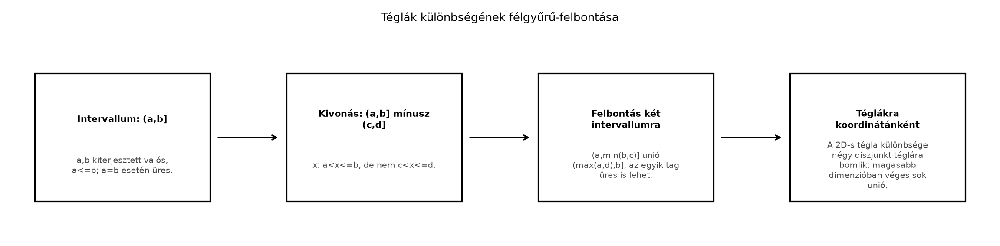

A Lebesgue-mérték megkonstruálásához olyan halmazrendszerből érdemes
kiindulni, amelynek elemein a „hossz” közvetlenül, képletszerűen adott.
Az intervallumokon a hossz
,
a téglákon a koordinátánkénti hosszak szorzata. Az intervallumok
rendszere azonban nem σ-algebra, sőt még algebra sem: például
nem intervallum. A mérés kiterjesztéséhez olyan minimális struktúra
kell, amelyben a különbségképzés nem vezet ki a rendszerből, legalábbis
véges diszjunkt uniók szintjén. Ezt a struktúrát nevezzük
félgyűrűnek (semiring).
6.4.2 Szemléletes kép
Tekintsünk egy kétdimenziós téglát, például a
négyzetet. Ha kivonunk belőle egy belső
téglát, a maradék nem tégla, de négy diszjunkt téglára bontható:
A félig nyílt
intervallumok azért kényelmesek, mert az ilyen darabok ismét ugyanilyen
típusúak maradnak.
6.4.3 Definíció: félgyűrű
Legyen
alaphalmaz. Egy
halmazrendszert félgyűrűnek nevezünk, ha
;
ha
,
akkor
;
ha
,
akkor az
különbség előáll véges sok, páronként diszjunkt
-beli
halmaz uniójaként:
ahol
,
és
,
ha
.
A
indexszám lehet
is: az üres unió az üres halmaz.
A definícióban a 2. pont a metszetre, a 3. pont a különbségre szab
feltételt. A félgyűrű nem követeli meg sem a komplementumra, sem az
unióra való zártságot.
6.4.4 Példa: a félig nyílt
intervallumok félgyűrűje
Legyen
Itt
,
tehát az üres halmaz is eleme a rendszernek. A kiterjesztett valós
végpontok miatt
is eleme.
Állítás. Az
rendszer félgyűrű.
Bizonyítás.
Az üres halmaz benne van:
.
Legyen
és
.
Az
pontosan akkor áll fenn, ha
,
,
és
.
Ezért
Ha
,
akkor a metszet üres, és üres halmazként is írhatjuk. Tehát
.
A különbség:
Ellenőrizzük a képletet. Ha
és
,
akkor vagy
,
vagy
.
Az első esetben
,
a másodikban
.
A két intervallum diszjunkt, mert az első felső határa
,
a második alsó határa
,
és ezek között nincs átfedés. A jobb oldal legfeljebb két diszjunkt
-beli
intervallum uniója, tehát a 3. félgyűrű-tulajdonság teljesül. ∎
6.4.5 Téglák
-ben
Ugyanez a gondolat magasabb dimenzióban is működik. A félig nyílt
téglák (rectangles) rendszere:
Két tégla metszete koordinátánkénti metszet, tehát ismét tégla. A
különbség koordinátánként legfeljebb két diszjunkt intervallumra bomlik,
és a szorzatokra bontással véges sok diszjunkt tégla unióját kapjuk. A
fenti 2D-s példában a középső tégla kivonása négy diszjunkt téglát
eredményez.
6.4.6 Ábra: a felbontás
lépései

Téglák különbségének félgyűrű-felbontása
- Az (a,b) intervallum különbsége legfeljebb két diszjunkt félig nyílt
intervallum; téglák esetén a koordinátánkénti felbontásból diszjunkt
téglák unióját kapjuk. A lépések a bizonyítás szerkezetét
mutatják.
6.4.7 Miért
és nem
?
A választás nem véletlen. A zárt
intervallumok rendszere nem félgyűrű, mert a különbség
kivezet a rendszerből:
ami nem zárt intervallum. A nyílt
intervallumok sem alkotnak félgyűrűt, mert
ami nem nyílt intervallum. Ezzel szemben a félig nyílt
intervallumok különbsége ismét félig nyílt intervallumok diszjunkt
uniója.
A másik ok a jobbról folytonosság. A későbbi
Lebesgue–Stieltjes-mérték konstrukciójában egy jobbról folytonos
eloszlásfüggvényhez olyan mértéket társítunk, amelyre
Ez a képlet az
típusú intervallumokkal természetes. A
típusú intervallumok is félgyűrűt alkotnának, de azokhoz a balról
folytonos függvények illeszkednének; a valószínűségszámításban az
eloszlásfüggvények jobbról folytonosak, így az
konvenció a standard.
Továbbvitt eredmény. Ezt a félgyűrűt használjuk a Előmérték: a hossz σ-additív az intervallumokon
alfejezetben: az
-n
definiált
(kiterjesztett valós végpontoknál
)
előmérték lesz, és erre épül a Lebesgue-mérték kiterjesztése. A téglák
félgyűrűjét a Szorzat-σ-algebra és a metszetek
mérhetősége alfejezetben használjuk, ahol a szorzat-σ-algebrát éppen
a téglák generálják.
6.4.8 A félgyűrű által generált
algebra
A félgyűrű elemeinek véges diszjunkt unióiból könnyen felépíthető a
legkisebb algebra.
Tétel. Legyen
félgyűrű az
felett, és tegyük fel, hogy
.
Legyen
Ekkor
algebra, mégpedig a legkisebb olyan algebra, amely
-et
tartalmazza.
Bizonyítás.
Az üres halmaz eleme
-nak:
esetén az üres unió.
Az
feltétel miatt
.
Metszetre zártság. Legyen
és
diszjunkt uniók. Ekkor
A félgyűrű 2. tulajdonsága miatt
.
A tagok páronként diszjunktak: ha
,
akkor vagy
,
és így
,
vagy
,
és így
.
Ezért
.
Komplementumra zártság. Először egyetlen
elemre. Mivel
,
a félgyűrű 3. tulajdonságát
és
párra alkalmazva:
valamilyen páronként diszjunkt
halmazokkal. Tehát
.
Ha most
tetszőleges
-beli
elem, akkor a De Morgan-azonossággal
Mivel mindegyik
,
és
zárt a véges metszetre, a metszet is
-ban
van.
Unióra zártság. Két
-beli
elemre
A jobb oldal
-ban
van, mert
zárt a komplementumra és a metszetre.
Legkisebb algebra. Ha
tetszőleges algebra, amelyre
,
akkor
zárt a véges unióra, ezért minden
-beli
véges diszjunkt uniót tartalmaz. Tehát
.
Mivel
maga is algebra, ezért
a legkisebb algebra, amely
-et
tartalmazza. ∎
A tétel feltétele, hogy
.
Az intervallumok
félgyűrűjében ez teljesül, hiszen
.
A generált algebra tehát a félig nyílt intervallumok véges diszjunkt
unióinak halmaza.
Megjegyzés. A generált algebra nem σ-algebra.
Például az
-en
a
megszámlálható unió nem áll elő véges intervallum-unio, ezért nincs
benne a generált algebrában. A σ-algebrához tovább kell lépni: ezt a
kiterjesztési tétel és a generált σ-algebra fogalma teszi lehetővé.
6.4.9 Tipikus hibák és
félreértések
A félgyűrű nem zárt a komplementumra. Az
intervallum komplementuma nem feltétlenül intervallum, ezért nem eleme
-nek.
A félgyűrű definíciója csak a metszetre és a véges diszjunkt
szétbontással kezelhető különbségre tesz feltételt.
A diszjunktság elhagyása a különbség felbontásánál.
A mérték bevezetésénél az additivitás miatt fontos, hogy a felbontás
páronként diszjunkt legyen. Ha valaki csak azt mondja, hogy a különbség
„előáll valahány intervallum uniójaként”, az nem elég: a diszjunktság
nélkül a mértéket nem lehet egyszerűen összeadni.
Az
és
típusú intervallumok összekeverése. Mindkettő félgyűrű, de a
jobbról folytonos eloszlásfüggvényhez az
típus illeszkedik. A könyv későbbi részeiben a Lebesgue–Stieltjes-mérték
képlete ezért az
intervallumokra vonatkozik.
A kiterjesztett valós végpontok figyelmen kívül
hagyása. Az
definíciójában az
kitétel biztosítja, hogy
maga is intervallum legyen, így a generált algebra tartalmazza a teljes
alaphalmazt.
6.4.10 Feladatok
6.4.10.1 (a) Fogalmi kérdés
Igaz-e, hogy az
félgyűrű σ-algebra? Válaszát egy konkrét megszámlálható unióval
indokolja.
6.4.10.2 (b) Számolási feladat
Írja fel az alábbi különbségeket diszjunkt
-beli
intervallumok uniójaként:
;
.
6.4.10.3 (c) Bizonyítási
feladat
Mutassa meg, hogy a
típusú, kiterjesztett valós végpontú intervallumok is félgyűrűt
alkotnak.
6.4.10.4 (d)
Ellenpélda-keresés
Mutassa meg, hogy a nyílt
intervallumok rendszere nem félgyűrű. Álljon meg a
gondolatmenet akkor is, ha a nyílt intervallumokhoz hozzávesszük az üres
halmazt?
6.4.11 Megoldások
6.4.11.1 (a) Megoldás
Nem. Az
rendszer nem zárt a megszámlálható unióra. Például
amely nyílt intervallum, tehát nem eleme
-nek,
hiszen
elemei jobbról zárt
alakúak.
6.4.11.2 (b) Megoldás
Az
halmaz az
-ból
kivonja a
részt. A maradék:
A két intervallum diszjunkt.
A
négyzetből kivonva a
középső téglát, négy diszjunkt téglát kapunk:
6.4.11.3 (c) Megoldás
Legyen
.
Az üres halmaz
.
A metszet:
Ha
,
akkor üres halmaz. A különbség:
A képlet hasonló az
esethez, csak a zártságok a bal oldalon vannak. A két intervallum
diszjunkt, tehát
félgyűrű.
6.4.11.4 (d) Megoldás
A nyílt intervallumok rendszere nem félgyűrű, mert a különbség
kivezet a rendszerből:
A
halmaz nem nyílt intervallum, és nem is állítható elő nyílt
intervallumok uniójaként, mert nyílt intervallumok uniója mindig nyílt,
a
pedig nem nyílt. Az üres halmaz hozzávétele nem segít, mert a különbség
nem üres.
6.4.12 Rövid összefoglaló
A félgyűrű olyan halmazrendszer, amely tartalmazza
az üres halmazt, zárt a véges metszetre, és bármely két elemének
különbsége előáll véges sok páronként diszjunkt elem uniójaként. Az
félig nyílt intervallumok rendszere félgyűrű, mert a metszet
,
a különbség pedig
,
legfeljebb két diszjunkt intervallum. Hasonlóan félgyűrűt alkotnak az
-beli
félig nyílt téglák. Ha
félgyűrű és
,
akkor az
elemeinek véges diszjunkt uniói algebrát alkotnak, és ez a legkisebb
-et
tartalmazó algebra. Az
választás a jobbról folytonos eloszlásfüggvényekhez illeszkedik,
előkészítve a Lebesgue–Stieltjes-mérték konstrukcióját.
Továbbvitt eredmény: az
-n
definiált hossz előmértékké válik a Előmérték: a
hossz σ-additív az intervallumokon alfejezetben, a téglák félgyűrűje
pedig a Szorzat-σ-algebra és a metszetek
mérhetősége alfejezetben generálja a szorzat-σ-algebrát.